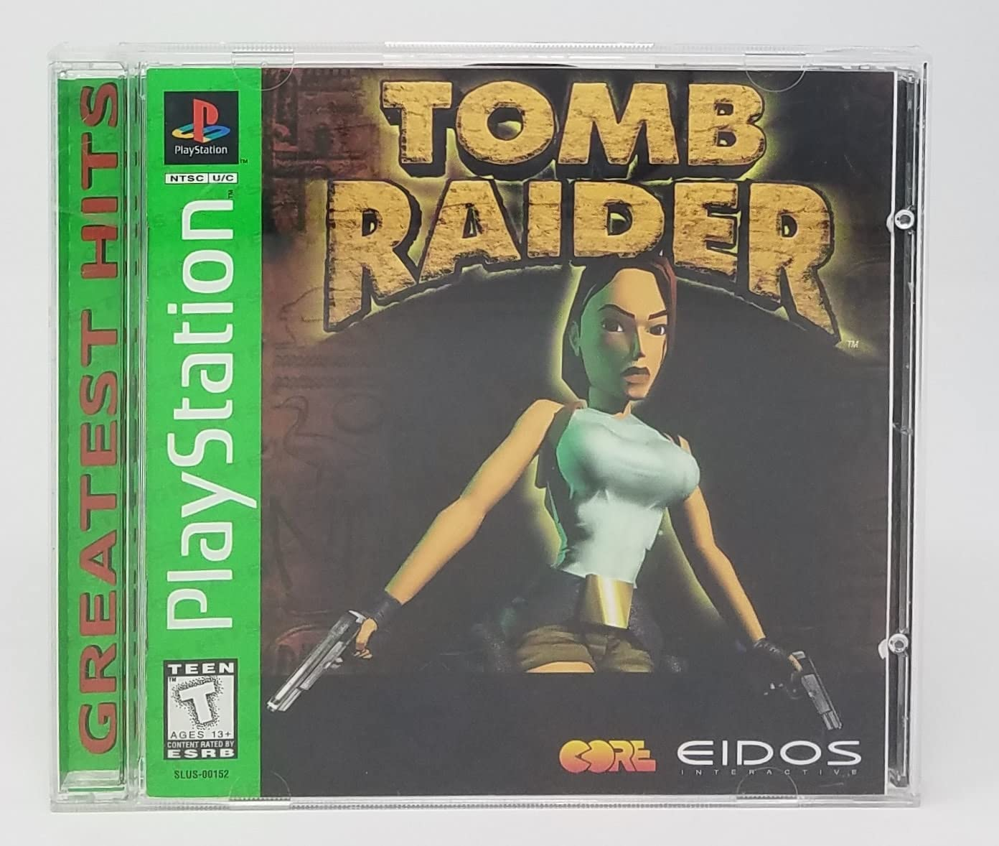

The Birth of a Legend: Tomb Raider on PS1
Lara Croft, the iconic adventurer and archaeologist, made her debut on the PlayStation 1 in 1996, with a groundbreaking title that would shape the future of video gaming. Tomb Raider was a revolutionary game for its time, combining exploration, puzzle-solving, and action in a way that had never been seen before. Join us as we explore the impact of this classic title that introduced players to Lara’s adventures and laid the foundation for a multimedia empire.
A Revolutionary Adventure
When Tomb Raider was released for the PlayStation 1 in 1996, it brought an entirely new gaming experience to players around the world. Developed by Core Design and published by Eidos Interactive, the game was a stunning mix of 3D environments, puzzle-solving, and action elements, creating an immersive experience that captivated audiences worldwide. It became one of the PS1’s defining titles and a major influence on the gaming industry.
The Iconic Heroine: Lara Croft
At the heart of Tomb Raider was Lara Croft, a bold and daring archaeologist. Her strong, independent character challenged the traditional roles of women in video games at the time. With her signature dual pistols and determined spirit, Lara quickly became a symbol of empowerment and resilience. Over the years, her character has evolved, but the 1996 version remains one of the most memorable portrayals in the series.

A Groundbreaking Experience for Its Time
The first Tomb Raider was notable not just for its gameplay but for its technical achievements. It pushed the limits of the PlayStation’s hardware with its expansive environments and the cutting-edge 3D graphics of the time. The game featured vast, interconnected levels, ranging from ancient temples to underground caverns, all meticulously designed to create a sense of real exploration and discovery. The soundtrack, composed by Nathan McCree, set the tone with atmospheric music that heightened the suspense and mystery of the journey, adding an extra layer of immersion to the game.
The Launch and Reception
Upon release, Tomb Raider was met with critical acclaim. Players were captivated by the game's mix of platforming and exploration, and the graphics, while dated by today’s standards, were revolutionary for their time. The game sold millions of copies worldwide and was soon hailed as one of the greatest games of its era. Lara Croft quickly became a pop culture icon, and the Tomb Raider series would go on to spawn multiple sequels, spin-offs, and a successful film franchise.
Gameplay Mechanics: A Mix of Action, Puzzle-Solving, and Exploration
- Gameplay Mechanics: A Mix of Action, Puzzle-Solving, and Exploration
- Combat and Stealth: While Lara’s dual pistols were the go-to weapon for most encounters, players also had to navigate stealth elements, avoiding traps and enemies strategically.
- Puzzle Solving: The game is widely remembered for its challenging puzzles, often requiring players to move objects, activate switches, and piece together clues to unlock new areas.
- Exploration and Hidden Secrets: One of Tomb Raider’s most thrilling aspects was the sense of discovery. Each level was filled with hidden rooms, treasures, and secret passages that encouraged players to explore every nook and cranny. Finding these secrets not only rewarded players with valuable items but also provided an extra layer of depth to the game’s environments.